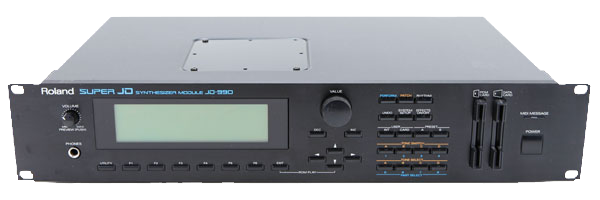

El Anthem House se caracteriza por sus melodías contundentes y memorables, y sus cualidades himnarias, a menudo utilizadas como himnos de club. Es esencialmente una canción de música house que captura la esencia de un género y está diseñada para complacer al público.
Anthem House is characterized by its bold, memorable melodies and its anthemic qualities, often used as club anthems. It's essentially a house track that captures the essence of a genre and is designed to please the crowd.
Características Clave del Anthem House:
Key Characteristics of Anthem House:
Melodías Contundentes:
Bold Melodies:
Las canciones de Anthem House suelen presentar melodías pegadizas y memorables, diseñadas para ser reconocibles al instante y contagiosas.
Anthem House tracks typically feature catchy, memorable melodies, designed to be instantly recognizable and infectious.
Riffs Himnarios:
Anthemic Riffs:
La música suele incluir riffs o frases prominentes y himnarios que se repiten a lo largo de la canción, creando una sensación de ritmo y emoción.
The music usually includes prominent, anthemic riffs or phrases that repeat throughout the song, creating a sense of momentum and excitement.
Ritmos Contundentes y Líneas de Bajo Imponentes:
Powerful Rhythms and Commanding Basslines:
Espera un ritmo contundente, listo para la pista de baile, con líneas de bajo prominentes y pulsantes que impulsan la música.
Expect a powerful, dancefloor-ready beat, with prominent, pulsing basslines that drive the music forward.
Eufórico y Emocionante:
Euphoric and Exciting:
Anthem House busca crear una atmósfera eufórica y estimulante, lo que lo hace ideal para clubes y festivales. Muestras vocales y manipulaciones: Muchas pistas de house himno incorporan muestras vocales, fragmentos o manipulaciones para realzar aún más el impacto antémico y emocional.
Anthem House aims to create a euphoric, uplifting atmosphere, making it ideal for clubs and festivals. Vocal samples and manipulation: Many anthem house tracks incorporate vocal samples, snippets, or manipulation to further heighten the anthemic, emotional impact.
A lo largo de los años ha habido varios éxitos de Anthem House, pero probablemente el tema monstruo que más significó para el underground de la época fue Faithless - Insomnia.
There have been a number of Anthem House hits over the years, but probably the one monster track that means the most to the underground at the time was Faithless - Insomnia.

Lanzado en 1995, Insomnia estableció la plantilla para todos los himnos que vendrían después: un breakdown que dura más de un minuto, una construcción con redoble de caja de 8 compases o más, y un himno creciente que hace saltar a todo el mundo. El himno, en este caso, se creó con el patch Pizzicato del sintetizador Roland JD-990, que era el módulo de rack del Roland JD-800.Released in 1995, Insomnia set the template for all anthems thereafter: A breakdown that lasts over a minute, a snare roll build of 8 bars or more, and a crescending anthem to get everyone to hop up and down. The anthem in this case was created with the Pizzicato patch on the Roland JD-990 synthesizer which was the rack module of the Roland JD-800.
Durante algunos años, muchos productores, desde Sash! hasta DJ Quicksilver, usaron ese mismo patch Pizzicato. Y toda una nueva generación creció con la impresión de que, para hacer un tema exitoso, había que tener una construcción, un breakdown y un himno en la canción.
For a few years, a lot of producers from Sash! to DJ Quicksilver all used this same Pizzicato patch. And a new generation came of age under the impression that to make a hit track, you had to have a build, a breakdown, and an anthem in your song.
Al igual que muchos otros géneros de larga trayectoria (Balearic, Progressive Breaks, Experimental), el Anthem House es bastante trendwhore en el sentido de que siempre adopta lo que esté de moda en cada momento. Tiene que hacerlo si quiere mantener su estatus de "rey de la pista de baile", como si eso fuera algo importante que ser.
Like a lot of other longstanding genres (Balearic, Progressive Breaks, Experimental), Anthem House is very trendwhorish in that it always adopts whatever is big at the time. It has to if it wants to maintain its status as the "dancefloor king", as if that's an important thing to be.
Cuando el Disco House estaba de moda, el Anthem House sonaba a Disco House pero con himnos. Cuando el French House pegó fuerte, el Anthem House sonaba a French House pero con himnos. Cuando explotó el Electrohouse, el Anthem House sonaba a Electrohouse pero con himnos. Y cuando llegó el Dutch House, el Anthem House dijo "paso", porque estaba haciendo algo llamado el anti-himno.
When Disco House was hot, Anthem House sounded like Disco House but with anthems. When French House was big, Anthem House sounded like French House but with Anthems. When Electrohouse blew up, Anthem House sounded like Electrohouse but with anthems. And when Dutch House became a thing, Anthem House said "nah" since it was doing something called the anti-anthem.